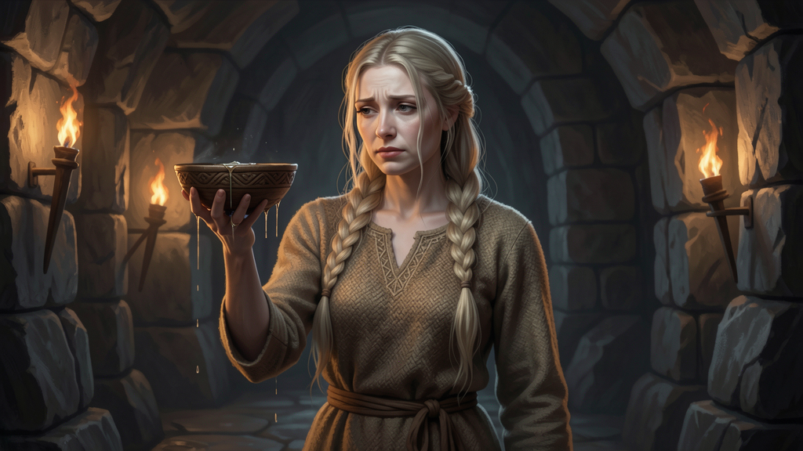

Reliability and error-catching automation — the bowl you never stop holding.

Friend of Victory — Sigyn (Old Norse Sigyn, "friend of victory") is Loki's wife, attested in Snorri's Gylfaginning and present at the feast in Lokasenna. After Baldr's death, the Æsir seized Loki and bound him: they transformed his son Váli into a wolf so that he tore his brother Nari (Narfi) apart, and they bound Loki with the dead son's entrails — one of the bonds becoming iron. Above Loki's face they set a serpent that drips venom.
Sigyn's role is the one act the whole myth turns on: she stands by the bound Loki and holds a bowl to catch the venom. Only when she turns aside to empty the bowl does the poison fall on Loki's face, and he shudders so violently that the earth quakes — these are the tremors mortals feel. She stays at her post until Ragnarök. (Nuance: "transformed into iron chains" in some retellings — more precisely the entrails became the binding, with one strand said to turn to iron. No Christian framing is present in the sources; this is a tale of binding and endurance, not of guilt or penalty.)
Sigyn's whole myth is a single act of steadfastness: she stands by the bound Loki and catches the venom, over and over, until Ragnarök. The instant she turns away to empty the bowl, the poison lands and the earth shakes. The agency lesson is brutal and exact: reliability is not a feature you bolt on, it is the bowl you never stop holding. One lapse in monitoring, one unhandled error, one missed alert — and the whole system shudders in front of the client.
Sigyn's fix is an always-on catch system that intercepts failures before they land: uptime monitoring, error-catching, and alert routing that never looks away. The venom never reaches the client because something is always there to hold the bowl.
Reliability and error-catching automation — monitoring, alert routing, and failure interception for agencies that never look away. Make.com + n8n ready.
Buy on the Marketplace → View all products